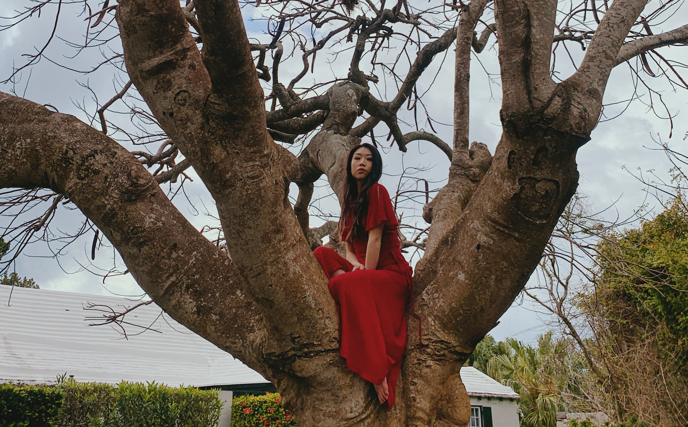

About Me

I was born and raised in Jakarta, Indonesia.
I consider myself one of those people who don't really have a clear cut "home" nation. While this used to make me sad, I've come to see that it is a blessing and privilege. After graduating cum laude from Tufts University with a Bachelor of Science in Cognitive and Brain Sciences, I took a job with CBI as a conference producer in the life sciences industry. Prior to graduating, I completed my senior thesis on the effects of caffeine consumption on human memory, for which I received High Thesis Honors. At CBI, I had the opportunity to work with high-level executives at biopharma companies, conduct market research on the most timely topics and problems in the industry, create blueprints for the conferences assigned to me and lead a team of sponsorship, logistics, marketing and delegate sales colleagues. The last item in my portfolio is a collection I designed a few years ago at Parsons School of Design. My immediate goals are to be the best pawrent to my dog, to become a life coach within 5 years and to travel as much as I can.